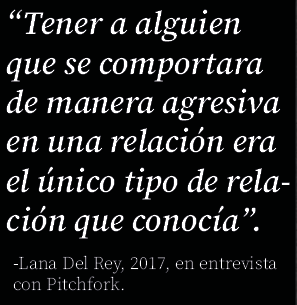
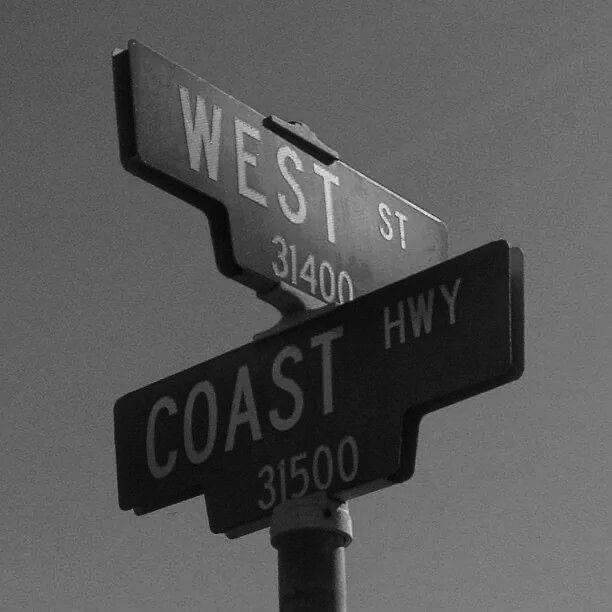

Ultraviolence es el tercer álbum de estudio de Lana Del Rey, publicado el 13 de junio de 2014. Producido principalmente junto al músico Dan Auerbach, del grupo The Black Keys, el disco representa una evolución hacia un sonido más oscuro, psicodélico y melancólico. A diferencia de la grandiosidad orquestal de Born to Die, este álbum apuesta por guitarras eléctricas, baterías pausadas, reverberación y una atmósfera inspirada en el rock de los años sesenta y setenta. Sus canciones exploran relaciones destructivas, nostalgia, deseo, dependencia emocional y la búsqueda de identidad.
Ultraviolence debutó directamente en el primer puesto del Billboard 200, convirtiéndose en el primer álbum de Lana Del Rey en alcanzar la cima de esta lista estadounidense. El disco vendió aproximadamente 182.000 copias en su primera semana, según las cifras de Nielsen SoundScan de la época. Este logro confirmó su consolidación comercial y artística.
Ultraviolence, la canción que da título al álbum, aborda una relación marcada por el poder, la obsesión y el daño. Su letra utiliza imágenes religiosas y románticas para mostrar cómo la protagonista mezcla la devoción con el sufrimiento. Esta representación resulta deliberadamente inquietante y permite reflexionar sobre la manera en que algunas narrativas culturales han idealizado el amor destructivo.


Brooklyn Baby es una de las canciones más interesantes de Ultraviolence porque representa una faceta diferente de Lana Del Rey: más irónica, despreocupada, bohemia y conectada con la cultura artística de Nueva York.
La canción contiene referencias a la Beat Generation, un movimiento literario y cultural que surgió en Estados Unidos durante las décadas de 1940 y 1950 y alcanzó gran popularidad en los años cincuenta y sesenta
.
La protagonista parece estar enamorada de un hombre músico, pero también disfruta de su propia identidad artística. Hay una actitud desafiante frente a quienes la consideran demasiado joven, ingenua o incapaz de comprender esa cultura.
La canción juega con la idea de ser una persona auténticamente alternativa, pero también se burla un poco de los estereotipos asociados con esa identidad.
Ultraviolence es un viaje por el lado más oscuro del amor, la nostalgia y la vulnerabilidad. A través de sonidos psicodélicos y una estética cinematográfica, Lana Del Rey transforma las contradicciones emocionales en una obra tan melancólica como fascinante.